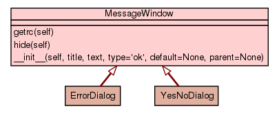

Trees
Indices
Help
Package up2date_client
::
Module messageWindow
:: Class MessageWindow
[
hide private
]
[
frames
] |
no frames
]
Class MessageWindow
source code

Instance Methods
[
hide private
]
getrc
(
self
)
source code
hide
(
self
)
source code
__init__
(
self
,
title
,
text
,
type
=
'
ok
'
,
default
=
None
,
parent
=
None
)
source code
Trees
Indices
Help
Generated by Epydoc 3.0.1 on Fri Mar 2 11:40:16 2012
http://epydoc.sourceforge.net